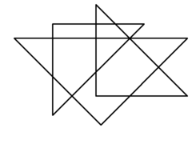

Your task, assigned by the International Office of Paper Pushing (IOPP),
is to count triangles on monochrome images. According to IOPP policy:
- a line is an uninterrupted series of black pixels
- furthermore a line is always horizontal, vertical or at 45 degrees
- a triangle is made up of 3 lines connected in 3 different corner pixels
| |

|